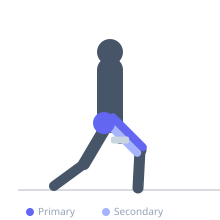
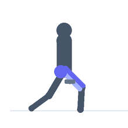

Exercise guide / Deficit Bulgarian Split Squat
Deficit Bulgarian Split Squat
The deficit Bulgarian split squat elevates the front foot on a plate or platform in addition to the rear foot being elevated on a bench. This creates a greater range of motion at the hip and knee of the working leg, increasing the stretch on the quadriceps and hip flexors at the bottom of the movement. It is an advanced variation that places significantly higher demands on flexibility and strength through a longer range of motion.
Primary muscles
rectus femoris
vastus lateralis
vastus medialis
gluteus maximus
Secondary muscles
biceps femoris long head
psoas major
Stabilizers
gluteus medius
erector spinae
Equipment
Dumbbell (Fixed)
Adjustable Bench (Incline / Decline)
Weight Plates


Starting position
- Place a weight plate or low platform under the front foot. Rear foot on a bench. Stand tall holding dumbbells. Ensure the front foot elevation is 1-3 inches high.
Setup
- Set up a bench for the rear foot and a plate or step for the front foot. The front foot elevation increases depth, so position farther back than a standard Bulgarian split squat.
Steps
- Step 1: Brace and control the descent, bending the front knee and dropping the rear knee.
- Step 2: Due to the front foot elevation, descend deeper than a standard RFESS.
- Step 3: Reach the greatest depth you can with control — this is significantly deeper than a standard split squat.
- Step 4: Drive through the front foot to return to standing.
Coaching cues
- Sink into the stretch
- Control the bottom
- Front knee tracks over second toe
Breathing
- Inhale on the descent, exhale on the ascent.
Range of motion
- Rear knee should travel well below the front foot level due to the deficit. Greater ROM than standard RFESS.
Tempo
- 3-1-2-0 (slow, controlled, pause at bottom)
Common mistakes
- Collapsing into the bottom without control
- Front knee caving inward
- Excessive forward torso lean
Safety
- Requires significant hip flexor and quad flexibility — develop standard Bulgarian split squat first
- Ensure front foot elevation is stable
Training
- strength: 4–8 reps
- hypertrophy: 8–12 reps
- strength: 3–4 sets
- hypertrophy: 3–4 sets
- Rest: {'strength': 120, 'hypertrophy': 90}